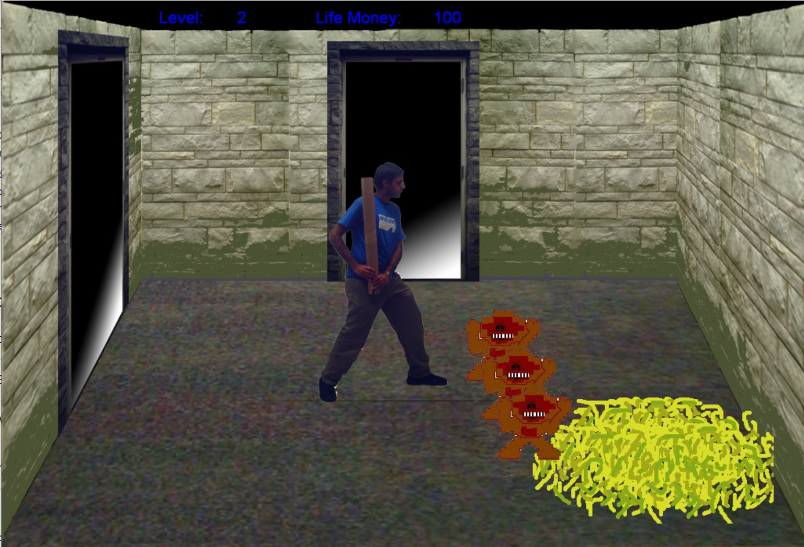

Tube Fighter XII: Hussain Awakens (March 2007)

Authors
Jason Eaton, Paul Skowronek, and Jason Skorski
Description
PETA has assaulted University research facilities and freed dozens of monkeys. These monkeys have
gathered thousands more monkeys, slain PETA, and taken up residence in the bowels of the CSE
building. Our intrepid President awakens to the sound of monkeys - you must FIGHT through the
monkeys, through the depths of the CSE building, and through the jaws of death itself.
Downloads
Compatibility notes.
Tested and working on Windows 10.